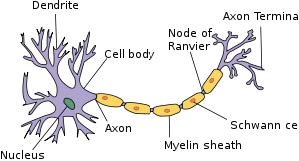
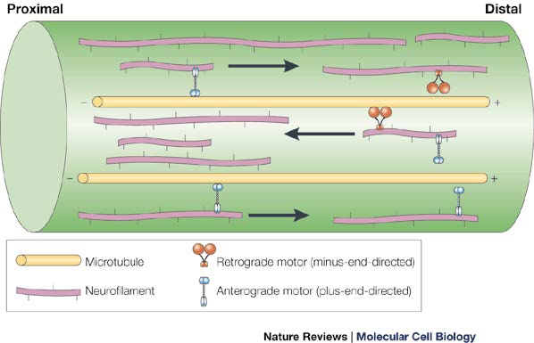

1. Cell Chemotaxis
2. Cytoskeleton Dynamics
A neuron (a nerve cell) is an electrically excitable cell that integrates and transmits information as part of the nervous system.  Axons are long slender projections of nerve cells that permit fast and specific electrical communication with other cells over long distances. The ability of nerve cells to extend and maintain these processes is critically dependent on the cytoskeleton.
Microtubules and neurofilaments are both long polymers that align in parallel along the long axis of the axon, forming a continuous overlapping array that extends from the cell body to the axon tip.  In healthy axons, microtubules and neurofilaments align along the axon and are interspersed in axonal. However, in many toxic neurodegenerative disorders these two populations of polymers separate from each other, with microtubules and organelles located near the long axis of the axon and neurofilaments displaced to the periphery near the axonal cross-sections. For example, in a sequence of experiments done by Prof. Brown's group in Ohio State University, when they apply a toxic chemical called IDPN (3,3’-iminodiproprionitrile) in physiological saline to adult male rats, a strong microtubule-neurofilament segregation was reported. However, the segregation process is reversible, and wash-out happen in hours.
From the experiments above, we can ask the following questions:
- How do microtubules and neurofilaments segregate each other under abnormal situations?
- Why does the segregation phenomena occur on a time scale of hours and is reversible?
- How is segregation related to impairment of neurofilament transport and axonal swelling?
To answer these questions, we need at first to construct a mathematical model. We offer two different modeling strategies -- agent based model and continuous model . Agent based model treats every cytoskeleton (microtubule or neurofilament) as a "agent", and use physical laws to describe their dynamics:

This project is partially supported by NSF grant #1312966. More details can be found on my candidacy exam presentation.
- References:
- Xue C, Shtylla B, Brown A (2015) A Stochastic Multiscale Model That Explains the Segregation of Axonal Microtubules and Neurofilaments in Neurological Diseases. PLoS Comput Biol 11(8): e1004406. doi:10.1371/journal. pcbi.1004406
- Brown A. In: Pfaff DW, editor. Axonal Transport. Neuroscience in the 21st century. Springer; 2013.
3. Hybrid Methods
Multiscale modelling challenges occur frequently throughout cell biology and molecular biology, especially in the context of cell migration or cell polarization. To solve multiscale problems, both stochastic and PDE modeling approaches have been well studied and in various of similar context in biology.
Generally speaking, stochastic models are easier to parameterize, can be used to integrate underlying biological phenomena, but hard to analyze mathematically and can be more computational expensive. PDE models, However, are amenable to mathematical analysis and computational methods are well-developed. But on one hand, since various biological processes (typically occurring on different time or length scales) are usually lumped together, it make parameters involved in PDEs difficult to obtain; On the other hand, PDE models are sometimes controversial since they are not able to provide all the details involved in a biological process.
Taking account all those considerations above, it is important to find underline connections of different approaches, so that we can make better decisions on WHEN and WHERE to use WHICH models.
We thereby propose two different approaches to study multiscale problems:
- Using stochastic hybrid system (similar to the ideas of diffusion jump process , Levy process or hybrid switching diffusions ), to see how stochastic behavior can be approximated by a PDE counterpart.
- Using PDE-assisted hybrid methods, to separate our problems into different geometric domains, and apply different strategies on each particular domain. This approach has been well studied in the context of computation.
More details of stochastic hybrid system can be found in the last pages of my candidacy exam presentation, and numerical algorithm of hybrid methods can be found in my presentation PDE-assisted hybrid methods.
- References:
- J. Hu, J. Lygeros, S. Sastry (2000) Towards a Theory of Stochastic Hybrid Systems, HSCC, 2000 - Springer
- B. Franz, M.B. Flegg, S.J. Chapman, R. Erban (2013) Multiscale Reaction-Diffusion Algorithms: PDE-Assisted Brownian Dynamics, SIAM J. Appl. Math., 73(3), 1224–1247. (24 pages)
- Spill, F., Guerrero, P., Alarcon, T., Maini, P. K., and Byrne, H., 2015, Hybrid Approaches for Multiple-Species Stochastic Reaction–Diffusion Models, J. Comput. Phys., 299, pp. 429–445.